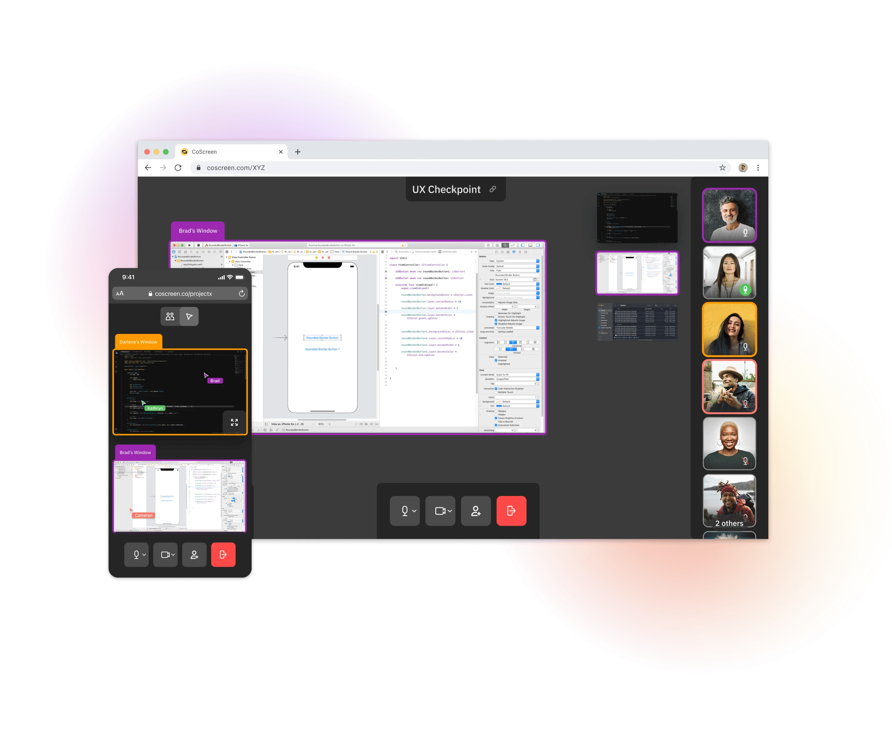
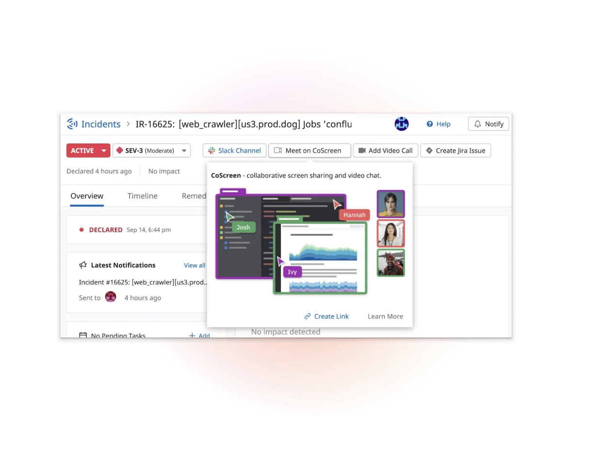

During my time in the CoScreen team, I spearheaded the post-acquisition design transition of the collaborative screen-sharing tool to align it with the Datadog ecosystem. We created a fully responsive web version of the app and designed key integrations with the Incident Response product.
Problem
CoScreen set out to fix what traditional screen sharing tools get wrong: slow, rigid experiences that don’t support real-time collaboration for engineers. After the Datadog acquisition, the challenge became integrating CoScreen into the broader platform and delivering the features needed to support high-pressure workflows like incident response.
Designing for Urgency
To make CoScreen viable during incident response, we needed to remove as much friction as possible. Requiring users to download software or grant permissions slowed things down when speed mattered most. We designed a fully responsive web version of the app to enable instant access—no install needed. This also allowed us to support mobile browsers, making CoScreen one of the first parts of the Datadog platform usable on mobile and extending its reach to on-call engineers working across devices.

Integrating with Core Workflows
CoScreen needed to work seamlessly with the tools engineers were already using. We integrated it into Datadog’s Incident Response product, making it possible to launch a room with a single click during an investigation. A second integration with Slack allowed users to share CoScreen links directly in channels or messages, helping teams move quickly from chat to live collaboration.

Upgrading the Tool Palette
As we introduced new features like the drawing tool, we needed to redesign how users interacted with shared windows. We added a tools palette that let users toggle between controlling and drawing, making the distinction explicit. This also addressed a common issue: many users didn’t realize they could control others’ windows, leading to accidental clicks and disruptions. The new UI made those modes clearer and gave users more control over how they interacted during a session.
Impact
CoScreen became the default screen sharing tool at Datadog, used both in daily workflows and during incidents. The redesign reduced user error, improved usability, and made it easier to collaborate without switching tools. Today, it’s used by hundreds of organizations across engineering teams.